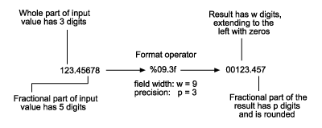
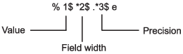

Formatting Text
To convert data to text and control its format, you can use formatting
operators with common conversion functions, such as num2str and sprintf.
These operators control notation, alignment, significant digits, and
so on. They are similar to those used by the printf function
in the C programming language. Typical uses for formatted text include
text for display and output files.
For example, %f converts floating-point values
to text using fixed-point notation. Adjust the format by adding information
to the operator, such as %.2f to represent two
digits after the decimal mark, or %12f to represent
12 characters in the output, padding with spaces as needed.
A = pi*ones(1,3);
txt = sprintf('%f | %.2f | %12f', A)txt = '3.141593 | 3.14 | 3.141593'
You can combine operators with ordinary text and special characters
in a format specifier. For instance, \n inserts
a newline character.
txt = sprintf('Displaying pi: \n %f \n %.2f \n %12f', A)txt =
'Displaying pi:
3.141593
3.14
3.141593'Functions that support formatting operators are compose, num2str, sprintf, fprintf,
and the error handling functions assert, error, warning,
and MException.
Fields of the Formatting Operator
A formatting operator can have six fields, as shown in the figure.
From right to left, the fields are the conversion character, subtype,
precision, field width, flags, and numeric identifier. (Space characters
are not allowed in the operator. They are shown here only to improve
readability of the figure.) The conversion character is the only required
field, along with the leading % character.

Conversion Character
The conversion character specifies the notation of the output. It consists of a single character and appears last in the format specifier.
Specifier | Description |
|---|---|
c | Single character. |
d | Decimal notation (signed). |
e | Exponential notation (using a lowercase |
E | Exponential notation (using an uppercase |
f | Fixed-point notation. |
g | The more compact of |
G | Same as |
o | Octal notation (unsigned). |
s | Character vector or string array. |
u | Decimal notation (unsigned). |
x | Hexadecimal notation (unsigned, using lowercase letters |
X | Hexadecimal notation (unsigned, using uppercase letters |
For example, format the number 46 using different conversion characters to display the number in decimal, fixed-point, exponential, and hexadecimal formats.
A = 46*ones(1,4);
txt = sprintf('%d %f %e %X', A)txt = '46 46.000000 4.600000e+01 2E'
Subtype
The subtype field is a single alphabetic character that immediately
precedes the conversion character. Without the subtype field, the
conversion characters %o, %x, %X,
and %u treat input data as integers. To treat input
data as floating-point values instead and convert them to octal, decimal,
or hexadecimal representations, use one of following subtype specifiers.
b | The input data are double-precision floating-point values
rather than unsigned integers. For example, to print a double-precision
value in hexadecimal, use a format like |
t | The input data are single-precision floating-point values rather than unsigned integers. |
Precision
The precision field in a formatting operator is a nonnegative
integer that immediately follows a period. For example, in the operator %7.3f,
the precision is 3. For the %g operator,
the precision indicates the number of significant digits to display.
For the %f, %e, and %E operators,
the precision indicates how many digits to display to the right of
the decimal point.
Display numbers to different precisions using the precision field.
txt = sprintf('%g %.2g %f %.2f', pi*50*ones(1,4))txt =
'157.08 1.6e+02 157.079633 157.08'While you can specify the precision in a formatting operator
for input text (for example, in the %s operator),
there is usually no reason to do so. If you specify the precision
as p, and p is less than the
number of characters in the input text, then the output contains only
the first p characters.
Field Width
The field width in a formatting operator is a nonnegative integer
that specifies the number of digits or characters in the output when
formatting input values. For example, in the operator %7.3f,
the field width is 7.
Specify different field widths. To show the width for each output,
use the | character. By default, the output text
is padded with space characters when the field width is greater than
the number of characters.
txt = sprintf('|%e|%15e|%f|%15f|', pi*50*ones(1,4))txt =
'|1.570796e+02| 1.570796e+02|157.079633| 157.079633|'When used on text input, the field width can determine whether to pad the output text with spaces. If the field width is less than or equal to the number of characters in the input text, then it has no effect.
txt = sprintf('%30s', 'Pad left with spaces')
txt =
' Pad left with spaces'Flags
Optional flags control additional formatting of the output text. The table describes the characters you can use as flags.
Character | Description | Example |
|---|---|---|
Minus sign ( | Left-justify the converted argument in its field. | %-5.2d |
Plus sign ( | For numeric values, always print a leading sign character
( | %+5.2d%+5s |
Space | Insert a space before the value. | % 5.2f |
Zero ( | Pad with zeros rather than spaces. | %05.2f |
Pound sign ( | Modify selected numeric conversions:
| %#5.0f |
Right- and left-justify the output. The default behavior is to right-justify the output text.
txt = sprintf('right-justify: %12.2f\nleft-justify: %-12.2f',... 12.3, 12.3)
txt =
'right-justify: 12.30
left-justify: 12.30 'Display a + sign for positive numbers. The
default behavior is to omit the leading + sign
for positive numbers.
txt = sprintf('no sign: %12.2f\nsign: %+12.2f',... 12.3, 12.3)
txt =
'no sign: 12.30
sign: +12.30'Pad to the left with spaces and zeros. The default behavior is to pad with spaces.
txt = sprintf('Pad with spaces: %12.2f\nPad with zeros: %012.2f',... 5.2, 5.2)
txt =
'Pad with spaces: 5.20
Pad with zeros: 000000005.20'Note
You can specify more than one flag in a formatting operator.
Value Identifiers
By default, functions such as sprintf insert
values from input arguments into the output text in sequential order.
To process the input arguments in a nonsequential order, specify the
order using numeric identifiers in the format specifier. Specify nonsequential
arguments with an integer immediately following the % sign,
followed by a $ sign.
| Ordered Sequentially | Ordered By Identifier |
|---|---|
sprintf('%s %s %s',...
'1st','2nd','3rd')
ans =
'1st 2nd 3rd'
| sprintf('%3$s %2$s %1$s',...
'1st','2nd','3rd')
ans =
'3rd 2nd 1st'
|
Special Characters
Special characters can be part of the output text. But because they cannot be entered as ordinary text, they require specific character sequences to represent them. To insert special characters into output text, use any of the character sequences in the table.
Special Character | Representation in Format Specifier |
|---|---|
Single quotation mark |
|
Percent character |
|
Backslash |
|
Alarm |
|
Backspace |
|
Form feed |
|
New line |
|
Carriage return |
|
Horizontal tab |
|
Vertical tab |
|
Character whose Unicode® numeric value can be represented
by the hexadecimal number, |
Example: |
Character whose Unicode numeric value can be represented
by the octal number, |
Example: |
Setting Field Width and Precision
The formatting operator follows a set of rules for formatting output text to the specified field width and precision. You also can specify values for the field width and precision outside the format specifier, and use numbered identifiers with the field width and precision.
Rules for Formatting Precision and Field Width
The figure illustrates how the field width and precision settings affect the output of the
formatting functions. In this figure, the zero following the % sign
in the formatting operator means to add leading zeros to the output text rather than
space characters.

If the precision is not specified, then it defaults to six.
If the precision
pis less than the number of digits in the fractional part of the input, then onlypdigits are shown after the decimal point. The fractional value is rounded in the output.If the precision
pis greater than the number of digitsfin the fractional part of the input, thenpdigits are shown after the decimal point. The fractional part is extended to the right withp-fzeros in the output.If the field width is not specified, then it defaults to
p+1+n, wherenis the number of digits in the whole part of the input value.If the field width
wis greater thanp+1+n, then the whole part of the output value is padded to the left withw-(p+1+n)additional characters. The additional characters are space characters unless the formatting operator includes the0flag. In that case, the additional characters are zeros.
Specify Field Width and Precision Outside Format Specifier
You can specify the field width and precision using values from
a sequential argument list. Use an asterisk (*)
in place of the field width or precision fields of the formatting
operator.
For example, format and display three numbers. In each case, use an asterisk to specify that the field width or precision come from input arguments that follow the format specifier.
txt = sprintf('%*f %.*f %*.*f',... 15,123.45678,... 3,16.42837,... 6,4,pi)
txt =
' 123.456780 16.428 3.1416'The table describes the effects of each formatting operator in the example.
Formatting Operator | Description |
|---|---|
| Specify width as the following input argument, |
| Specify precision as the following input argument, |
| Specify width and precision as the following input arguments, |
You can mix the two styles. For example, get the field width from the following input argument and the precision from the format specifier.
txt = sprintf('%*.2f', 5, 123.45678)txt =
'123.46'Specify Numbered Identifiers in Width and Precision Fields
You also can specify field width and precision as values from
a nonsequential argument list, using an alternate syntax shown in
the figure. Within the formatting operator, specify the field width
and precision with asterisks that follow numbered identifiers and $ signs.
Specify the values of the field width and precision with input arguments
that follow the format specifier.

For example, format and display three numbers. In each case, use a numbered identifier to specify that the field width or precision come from input arguments that follow the format specifier.
txt = sprintf('%1$*4$f %2$.*5$f %3$*6$.*7$f',... 123.45678, 16.42837, pi, 15, 3, 6, 4)
txt =
' 123.456780 16.428 3.1416'The table describes the effect of each formatting operator in the example.
Formatting Operator | Description |
|---|---|
|
|
| |
|
|
| |
|
|
| |
|
Restrictions on Using Identifiers
If any of the formatting operators include an identifier field, then all the operators in the format specifier must include identifier fields. If you use both sequential and nonsequential ordering in the same function call, then the output is truncated at the first switch between sequential and nonsequential identifiers.
| Valid Syntax | Invalid Syntax |
|---|---|
sprintf('%d %d %d %d',...
1,2,3,4)
ans =
'1 2 3 4'
| sprintf('%d %3$d %d %d',...
1,2,3,4)
ans =
'1 '
|
If your function call provides more input arguments than there are formatting operators in the format specifier, then the operators are reused. However, only function calls that use sequential ordering reuse formatting operators. You cannot reuse formatting operators when you use numbered identifiers.
| Valid Syntax | Invalid Syntax |
|---|---|
sprintf('%d',1,2,3,4)
ans =
'1234'
| sprintf('%1$d',1,2,3,4)
ans =
'1'
|
If you use numbered identifiers when the input data is a vector or array, then the output does not contain formatted data.
| Valid Syntax | Invalid Syntax |
|---|---|
v = [1.4 2.7 3.1];
sprintf('%.4f %.4f %.4f',v)
ans =
'1.4000 2.7000 3.1000'
| v = [1.4 2.7 3.1];
sprintf('%3$.4f %1$.4f %2$.4f',v)
ans =
1×0 empty char array
|
See Also
compose | sprintf | fprintf | num2str